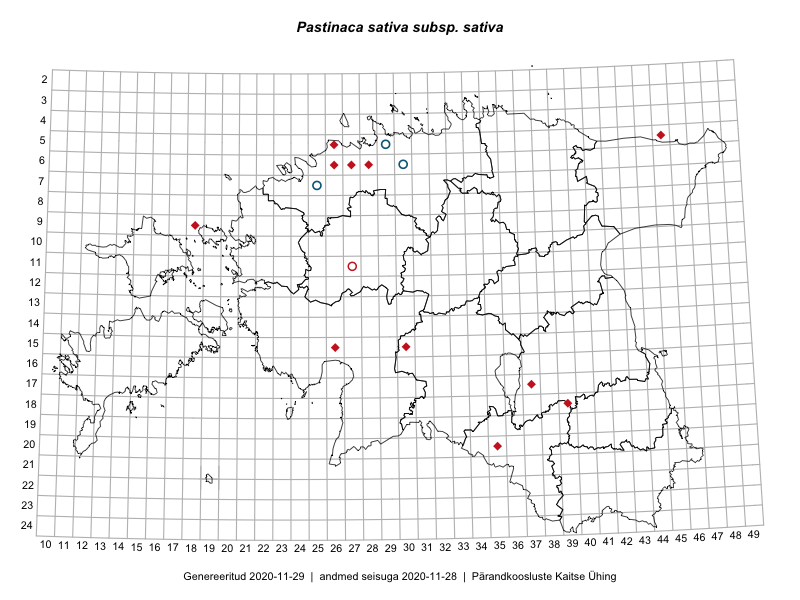

Pastinaca sativa subsp. sativa — aed-moorputk
Apiaceae :: Pastinaca sativa L. (64); Pastinaca sativa subsp. sativa L. (8)

Kaart põhineb 80 kirjel:
vaatlusi 8
herbaareksemplare 64
LVA kirjeid1 8
Taime kaasaegsed ja ajaloolised leiukohad asuvad 51 ruudus.
Tingmärgid ja leidudega ruutude arvud periooditi uues (u) ja 2005 andmestikus (v)
| █ | vahemik | u2 | v3 |
|---|---|---|---|
| █ | 2006–2020 | 9 | – |
| ◆/◇ | 1971–2005 | 8 | 11 |
| ○ | 1921–1970 | 32 | 1 |
| + | kuni 1920 | 11 | 0 |
| × | hävinud | – | 0 |
| ? | kaheldav | – | 0 |
| Ruut | Leidja(d) | Leiuaeg | Kirje |
|---|---|---|---|
| 16-40 | Margit Hirv | 2019-06-14 | punkt: Pastinaca sativa L. |
| 12-38 | Ulvi Selgis | 2019-05-29 | LVA: 1258964430 |
| 18-39 | Avo Veermäe | 2017-08-14 | LVA: 1229213032 |
| 07-36 | Avo Veermäe | 2017-08-03 | LVA: 250528324 |
| 09-26 | Miina Krabbi | 2016-07-24 | LVA: 2095024744 |
| 06-32 | Miina Krabbi | 2016-07-10 | LVA: -1926297688 |
| 06-43 | Miina Krabbi | 2016-07-06 | LVA: 375418982 |
| 12-37 | Enn Selgis | 2016-05-05 | LVA: -466739526 |
| 06-43 | Miina Krabbi | 2015-07-19 | LVA: -901474390 |
| 16-40 | Karin Kikas, Elle Rajandu | 2015-05-14 | punkt: Pastinaca sativa L. |
| 06-26 | Uve Ramst | 2013-08-17 | punkt: Pastinaca sativa L. |
| 21-43 | Toomas Kukk | 2005-10-12 | TAA0022962: Pastinaca sativa L. |
| 05-45 | Eerik Leibak | 2003 | ruut/ala: Pastinaca sativa L. |
| 05-31 | Ruth Aguraiuja | 2000-07-18 | TALL C008949: Pastinaca sativa L. |
| 05-29 | Toomas Kukk | 1987-07-30 | TAA0022965: Pastinaca sativa L. |
| 06-26 | Heinrich Aasamaa | 1986-10-05 | TAM0083845: Pastinaca sativa L. |
| 05-28 | Heinrich Aasamaa | 1986-07-10 | TAM0083846: Pastinaca sativa L. |
| 06-28 | H. Aasamaa | 1986 | ruut/ala: Pastinaca sativa L. |
| 06-26 | H. Aasamaa | 1985 | ruut/ala: Pastinaca sativa L. |
| 05-26 | E. Kann, Heljo Krall | 1983-06-07–1983-06-08 | ruut/ala: Pastinaca sativa L. |
| 15-33 | I. Kuusik, Haide-Ene Rebassoo | 1965-06-24 | TAA0023006: Pastinaca sativa L. |
| 14-24 | Alma Saare, Silvia Talts | 1964-07-14 | TAA0023012: Pastinaca sativa L. |
| 12-29 | Visolde Puusepp | 1964-07-06 | TAA0022994: Pastinaca sativa L. |
| 12-28 | Maret Kask | 1964-07-06 | TAA0023011: Pastinaca sativa L. |
| 10-41 | Vilma Kuusk | 1963-07-02 | TAA0022983: Pastinaca sativa L. |
| 07-38 | Maret Kask, U. Nõmm | 1963-06-19 | TAA0022997: Pastinaca sativa L. |
| 07-38 | Maret Kask, U. Nõmm | 1963-06-19 | TAA0022998: Pastinaca sativa L. |
| 18-37 | Maret Kask, Raivo Läst | 1962-06-21 | TAA0022959: Pastinaca sativa L. |
| 10-20 | Maret Kask, Silvi Pärn | 1960-07-08 | TAA0023010: Pastinaca sativa L. |
| 19-39 | Maret Kask | 1960-06-23 | TAA0022963: Pastinaca sativa L. |
| 18-35 | Helga Tamm, Ella Tammemägi | 1959-07-29 | TAA0022989: Pastinaca sativa L. |
| 06-35 | Juta Kaasik | 1958-08-11 | TAA0022981: Pastinaca sativa L. |
| 06-35 | Juta Kaasik | 1958-08-11 | TAA0022982: Pastinaca sativa L. |
| 07-35 | Ella Tammemägi | 1958-08-07 | TAA0023007: Pastinaca sativa L. |
| 08-35 | Visolde Puusepp, Alma Saare | 1958-08-06 | TAA0023008: Pastinaca sativa L. |
| 07-36 | Linda Viljasoo, Juta Kaasik | 1958-08-06 | TAA0022964: Pastinaca sativa L. |
| 05-28 | Vilma Kuusk | 1958-08-01 | TAA0022984: Pastinaca sativa L. |
| 05-28 | Vilma Kuusk | 1958-08-01 | TAA0022985: Pastinaca sativa L. |
| 21-38 | Maret Kask, Salme Kask | 1957-08-07 | TAA0023001: Pastinaca sativa L. |
| 23-41 | Maret Kask | 1957-08-03 | TAA0023004: Pastinaca sativa L. |
| 19-43 | A. Dessler | 1957-06-22 | TAA0023000: Pastinaca sativa L. |
| 10-37 | Henni Kallak, Helga Tamm | 1956-08-01 | TAA0023003: Pastinaca sativa L. |
| 10-38 | Maret Kask | 1956-07-31 | TAA0022992: Pastinaca sativa L. |
| 09-38 | Linda Viljasoo | 1956-07-30 | TAA0022988: Pastinaca sativa L. |
| 11-27 | V. Kuusk, K. Pork | 1952-08 | ruut/ala: Pastinaca sativa L. |
| 06-30 | V. Kasak | 1951-08-01 | TAM0028104: Pastinaca sativa subsp. sativa L. |
| 06-30 | V. Kasak | 1951-08-01 | TAM0028105: Pastinaca sativa subsp. sativa L. |
| 06-30 | V. Kasak | 1951-08-01 | TAM0028106: Pastinaca sativa subsp. sativa L. |
| 06-30 | V. Kasak | 1951-08-01 | TAM0028107: Pastinaca sativa subsp. sativa L. |
| 11-37 | Heljo Tuvikene | 1949-07-16 | TAA0022995: Pastinaca sativa L. |
| 05-29 | V. Kasak | 1947-08-13 | TAM0029083: Pastinaca sativa subsp. sativa L. |
| 05-29 | V. Kasak | 1947-08-13 | TAM0064918: Pastinaca sativa subsp. sativa L. |
| 16-40 | Maret Kask | 1947-07-15 | TAA0022973: Pastinaca sativa L. |
| 16-40 | Maret Kask | 1947-07-15 | TAA0022974: Pastinaca sativa L. |
| 16-40 | Maret Kask | 1947-07-15 | TAA0022975: Pastinaca sativa L. |
| 16-40 | Maret Kask | 1947-07-15 | TAA0022977: Pastinaca sativa L. |
| 16-40 | Maret Kask | 1947-07-15 | TAA0022978: Pastinaca sativa L. |
| 16-40 | Maret Kask | 1947-07-15 | TAA0022976: Pastinaca sativa L. |
| 07-25 | E. Peikel | 1945-07-01 | TAM0029085: Pastinaca sativa subsp. sativa L. |
| 07-25 | E. Peikel | 1945-07-01 | TAM0029086: Pastinaca sativa subsp. sativa L. |
| 10-37 | Albert Üksip | 1942-07-30 | TAA0022993: Pastinaca sativa L. |
| 06-26 | P. Kochtitsky | 1933-07-12 | TAA0114429: Pastinaca sativa L. |
| 10-21 | Gustav Vilbaste | 1931-07-12 | TAA0023022: Pastinaca sativa L. |
| 06-26 | L. Saar | 1931-07 | TAA0022970: Pastinaca sativa L. |
| 17-15 | Stange | 1929-07-18 | TAA0118082: Pastinaca sativa L. |
| 15-40 | Johannes Talts | 1928-08-15 | TAA0022968: Pastinaca sativa L. |
| 15-40 | Johannes Talts | 1928-08-15 | TAA0022969: Pastinaca sativa L. |
| 16-33 | Harald Haberman | 1926-09-05 | TAA0022986: Pastinaca sativa L. |
| 11-22 | Paul Wasmuth | 1910-07-30 | TAM0131462: Pastinaca sativa L. |
| 06-25 | Paul Wasmuth | 1909-07-05 | TAM0131460: Pastinaca sativa L. |
| 10-25 | 1899 | TAM0140752: Pastinaca sativa L. | |
| 07-35 | G. Pahnsch | 1879-07-21 | TAM0123499: Pastinaca sativa L. |
| 06-38 | Rudolph Lehbert | 1878-08-05 | TAM0062276: Pastinaca sativa L. |
| 06-38 | G. Pahnsch | 1869-08-03 | TAM0123500: Pastinaca sativa L. |
| 11-29 | J. Treboux | 1861–1915 | TAM0113998: Pastinaca sativa L. |
| 18-23 | J. Treboux | 1861–1915 | TAM0113999: Pastinaca sativa L. |
| 13-35 | J. Treboux | 1859-09 | TAM0061132: Pastinaca sativa L. |
| 16-40 | Kapp | 1856–1887 | TAA0023016: Pastinaca sativa L. |
| 10-22 | Th. Frese | 1854 | TAM0123492: Pastinaca sativa L. |
| 10-21 | P. Glehn | TAM0123493: Pastinaca sativa L. |
Loodusvaatluste andmebaas. https://lva.eelis.ee, väljavõte seisuga 19.10.2020↩︎
Ruutude arv uue atlase andmekogu järgi. Muuhulgas arvestab vanemat herbaariumi, 2005. aasta atlase välitöölehtedelt uuesti digitaliseeritud andmeid jne. Uue atlase andmekogust pärinevad andmed on kaardile kantud siniste sümbolitega.↩︎
Ruutude arv 2005. aasta atlase (Kukk, T., Kull, T., Eesti taimede levikuatlas. Eesti Maaülikool, Põllumajandus- ja Keskkonnainstituut, Tartu, 2005) järgi. Andmeallikana on kasutatud levik.exe programmi, kus igas ruudus on registreeritud vaid uusim leid. Seetõttu on vanemate perioodide kohta andmed puudulikud. Kasutatud levik.exe andmestikus leidub mõningaid kõrvalekaldeid atlase trükis ilmunud versioonist, sagedamini tarnade ja käpaliste seas. Lisaks leidub selles andmestikus valik liike (peamiselt väheste leidudega tulnuktaimed), mille kaarte trükis ei avaldatud. Vana atlase andmed ruutudest, milles ei ole uue atlase andmekogus leide enne 2006. aastat, on kaardil esitatud punaste sümbolitega. Vana atlase andmetel hävinud ja kaheldavaid leiukohti pole hilisemate (taas)leidude põhjal korrigeeritud.↩︎